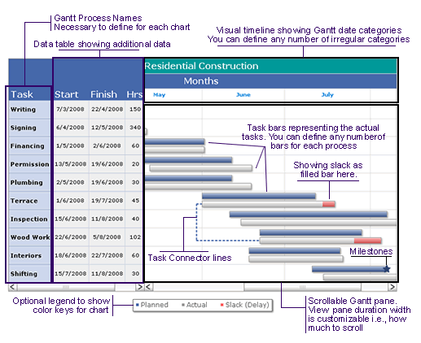

| Anatomy |
FusionWidgets Gantt chart consists of the following elements:
Here we’ll see each of them in detail. Let’s first have a look at a standard Gantt chart enlisting a few of the above elements: |
|  |
| Categories and sub-categories (dates) on the visual timeline |
A Gantt chart is constructed with a horizontal axis representing the total time span of the project, broken down into increments (for example, days, weeks, or months). FusionWidgets Gantt chart allows you to define any number of sub-categories to show dates broken into smaller units. For example, if you were to show a Gantt Chart spanning 2 years, you can show the first sub-category as quarters, then divide these quarters into months, then weeks and finally into days. This is all possible with FusionWidgets Gantt Chart. Irregular distribution of the timeline is also possible. For example, if you want to plot a Gantt chart illustrating the development of a certain project during a time span of 3 months and you want to show weekly progress, you can easily divide the time period into weeks based on their actual dates to show the true progress. In the visual date timeline, the top bar could represent the 3 months by their names and the bar below it could display the weeks. In most of the other Gantt charts, you’re forced to divide a month into 4 weeks only, thereby resulting to aberrations in visual data display, as a month always is more than 4 weeks. But since FusionWidgets Gantt chart is date based, all your divisions of date are perfect. You can therefore show a week starting in one month and ending in other. |
| Process names |
Each task in a Gantt chart is represented as a process. For example, in the chart above, we've the processes as "Writing", "Signing", "Financing" etc. Whenever you build a Gantt chart using FusionWidgets, you need to specify the process names and then specify the tasks within process names. The process names show up in a scrollable data table to the left of Gantt pane. |
| Data table to show additional data columns |
| If you need to provide more data pertinent to each process, you can show that data in an interactive and fully customizable data table. This data table is drag-able and scrollable. Also, each cell's cosmetics can be thoroughly customized and data in each cell can be linked to external links. |
| Task Bars |
| Task Bars are the actual bars which represent the duration of each task. These run through the horizontal length of chart and are positioned w.r.t dates specified for each of them. |
| Milestones |
Milestones are an important part of the Gantt chart as they allow you to visually depict any crucial dates on the chart. FusionWidgets allows you to create your own milestones on the chart based on date and task, i.e., for a given task you can specify milestones on specific dates and you can customize all the visual properties of the milestone including shape (star or polygon), size and colors. Additionally, you can add tool text and link for the milestone. |
| Task Connectors |
FusionWidgets Gantt chart allows you to draw connectors between your task bars to indicate the flow of the entire process. On the functional side, to draw a connector, all you need to do is specify the Id of the two tasks, which you want to connect. Apart from this, you can also specify where the connector joins the start and end task bar individually – at their start or end. For example, if you need to plot two connecting tasks which are simultaneous in nature, that is each process starts at the same time and relates to the same thing, you can connect the start of task bar to the start of end bar to give the visual effect. Similarly, if the second process can start only after the first process has ended, you can connect the end of first task bar to the start of succeeding task bar. |
| Trend Lines |
| Trend Lines can be used to show important dates on the chart - like today or scheduled date etc. |
| Legend |
| For the chart, you can define your own legend and keys for the same. This is an optional requirement, but can be useful as shown in the image above to depict what each color represents. |